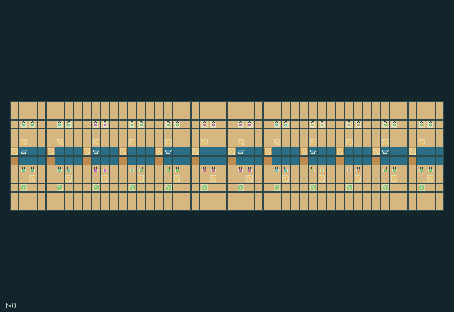

GI237 · Canal Nightmarket Kitchens

Coordinate shared ingredient unloading, recipes, water allocation and warm matching deliveries to moving customer docks.
Identity and original contract
48 independently actionable roles; 16 discrete commands per role; 212 native observation columns per role; original horizon 768 steps. Declared per-step reward range: -4.0 to 4.0. Observation regime: partially_observable.
Source SHA-256: 313eebca823ab1d005942f0a52a625798ed17296f0302fa0b0091198ecbc8f00
The objective, rewards, population, map and horizon remain original. A preview is not a success claim.
Objective and gameplay
Coordinate shared ingredient unloading, recipes, water allocation and warm matching deliveries to moving customer docks.
Basket help, shared barge stocks, equipment washing, delayed downstream water, recipe ratios, moving requests and temperature-sensitive handoffs affect others.
- Select one of 48 workers. Knife, pot, navigator and wash tools can be exchanged; carried items and warmth transfer through native handoffs.
- Unload one ingredient from a finite-stock barge only while an adjacent worker assists. Knife/navigator tools take root; others take grain.
- Cut roots at boards. Two cut roots and one grain make broth; one cut root and two grain make a rice plate. A clean stove cooks for four ticks.
- Wash uses local water and restores a clean stove use. Open locks send water downstream through two FIFO slots; fresh water enters only at the west.
- Footbridges require water at most three; barges require water at least two and open locks. Barges and customer docks travel along the canal.
- Serve the requested dish while warm. Requests are local; relay them before committing ingredients. Nightmarket closes at 768.
Ending: No early natural terminal; the 768-tick market closing truncates the episode.
What this game explores
Resource commons & externalities: An action changes a persistent resource or burden that another role also encounters. Compare extraction with maintenance and record the downstream resource trajectory.
Complementary production & service: A useful outcome requires ordered stages, scarce equipment or another role's capability. Measure real completed products and resource circulation rather than counting intermediate actions as success.
Joint transport & shared access: Positions, load geometry, occupancy and persistent access constrain whose action can succeed next. Distinguish physical handoff, shared controls and simultaneous force from a cosmetic cooperation label.
These are questions supported by rule structure, not observed learning effects.
Play it: operating walkthrough
crucibles play --game gi237Keep Python running and open its printed address. Select this game, set a seed and press Create session. The game itself is always English.
Assign a role range to Host with Assign / take over, or Assign all roles. Invite a second participant with Create player invitation, then assign a disjoint subset. Every original role is available.
For every owned role choose a legal command and press Queue. Arrow keys / WASD queue a declared directional action for the current role camera when available. Space or Advance one joint step advances everyone together. Non-directional games use the selectors.
Unqueued roles use the labelled untrained uniform-legal policy. Take over or release roles before the next step without resetting. Full-state debug is privileged and permanently logged; role cameras preserve permissions. Close the session to retain logs. Server restart does not restore sessions.
Complete command reference
IDs and English labels exactly match the manifest. Availability depends on role, resources, location and phase. An available action can still have no productive effect.
0·Wait / receive
1·Walk north
2·Walk east
3·Walk south
4·Walk west
5·Assist adjacent basket unloader
6·Unload barge ingredient with a nearby assisting partner
7·Cut root at board with knife
8·Add cut root or grain to nearby stove
9·Collect finished plate from nearby stove
10·Wash stove equipment at channel wash station
11·Serve matching nearby customer request
12·Toggle nearby lock with navigator tool
13·Hand item and heat to adjacent waiting empty actor
14·Relay nearby customer request to local listeners
15·Exchange tools with adjacent waiting actor
Roles and capability identifiers
These original role names describe capabilities, not interchangeable skins. Check each owned role's legal selector before planning handoffs.
agent_0·knife cook
agent_1·pot cook
agent_2·lock navigator
agent_3·washer
agent_4·knife cook
agent_5·pot cook
agent_6·lock navigator
agent_7·washer
agent_8·knife cook
agent_9·pot cook
agent_10·lock navigator
agent_11·washer
agent_12·knife cook
agent_13·pot cook
agent_14·lock navigator
agent_15·washer
agent_16·knife cook
agent_17·pot cook
agent_18·lock navigator
agent_19·washer
agent_20·knife cook
agent_21·pot cook
agent_22·lock navigator
agent_23·washer
agent_24·knife cook
agent_25·pot cook
agent_26·lock navigator
agent_27·washer
agent_28·knife cook
agent_29·pot cook
agent_30·lock navigator
agent_31·washer
agent_32·knife cook
agent_33·pot cook
agent_34·lock navigator
agent_35·washer
agent_36·knife cook
agent_37·pot cook
agent_38·lock navigator
agent_39·washer
agent_40·knife cook
agent_41·pot cook
agent_42·lock navigator
agent_43·washer
agent_44·knife cook
agent_45·pot cook
agent_46·lock navigator
agent_47·washer
Information and observation permissions
Public quay/canal geometry; selected nearest local entity rows reveal customer requests only nearby or through explicit timed relay. Hydraulic and plate-heat gauges are available only within the current four-cell sector. Unseen event channels are debug-only.
The GIF is full-state debug and may reveal hidden entities or private state. Train on obs[agent], not the picture, state tree or another role's private row. Field slices and visibility are in the original manifest.
Reinforcement-learning integration
import jax
from crucibles_jaxmarl import make
env = make("gi237")
key = jax.random.PRNGKey(0)
key, rk, ak, sk = jax.random.split(key, 4)
obs, state = jax.jit(env.reset)(rk)
actions = env.sample_actions(ak, state)
obs, state, rewards, dones, info = jax.jit(env.step_env)(sk, state, actions)
done = dones["__all__"]Observations are float32 vectors of width 212; actions are scalar int32; masks have 16 entries. Supply all 48 roles each transition. Masked sampling is an engineering reference, not a trained learner.
step_env retains terminal data without reset. step performs outer autoreset and keeps terminal data in info["raw_state"] and info["raw_observation"]. Use dones["__all__"] for episode boundaries; separate completion, failure and time limit in analysis.
JIT or vmap equal identities and shapes. Split independent reset, policy and transition keys. Group different shapes explicitly; do not shrink the population or horizon. Host rendering stays outside training.
Training questions and fair evaluation
Define valid completion from the objective before fitting. Preserve original rewards and also report real deliveries/services, losses, resource state, unresolved episodes and per-role returns. Animation is not a reward signal.
An action changes a persistent resource or burden that another role also encounters. Compare extraction with maintenance and record the downstream resource trajectory.
A useful outcome requires ordered stages, scarce equipment or another role's capability. Measure real completed products and resource circulation rather than counting intermediate actions as success.
Positions, load geometry, occupancy and persistent access constrain whose action can succeed next. Distinguish physical handoff, shared controls and simultaneous force from a cosmetic cooperation label.
Compare memory, communication or centralized critics under matched actor information. Declare critic access; keep actor inputs role-filtered. Match partner/opponent distributions, masks, compute and checkpoint selection. Final tests never enter fitting or selection.
Independent training runs or source-pairing blocks are inferential units; episodes from one policy are not independent training replications. Save hashes, keys, versions, device, time and cost. Negative, zero, failed and indeterminate outcomes are valid. No trained checkpoint or target score is supplied.
Classification and evidence
Overlapping editorial labels are reading aids, not proof of novelty, difficulty, strategic equivalence or learning effects.
- Resource commons & externalities
- Evidence
manifest.task.objective: Coordinate shared ingredient unloading, recipes, water allocation and warm matching deliveries to moving customer docks.
- Evidence
manifest.task.interaction: Basket help, shared barge stocks, equipment washing, delayed downstream water, recipe ratios, moving requests and temperature-sensitive handoffs affect others.
- Evidence
manifest.task.observation_access: Public quay/canal geometry; selected nearest local entity rows reveal customer requests only nearby or through explicit timed relay. Hydraulic and plate-heat gauges are available only within the current four-cell sector. Unseen event channels are debug-only.
- Complementary production & service
- Evidence
manifest.task.objective: Coordinate shared ingredient unloading, recipes, water allocation and warm matching deliveries to moving customer docks.
- Evidence
manifest.task.interaction: Basket help, shared barge stocks, equipment washing, delayed downstream water, recipe ratios, moving requests and temperature-sensitive handoffs affect others.
- Evidence
manifest.actions.6: Unload barge ingredient with a nearby assisting partner
- Joint transport & shared access
- Evidence
manifest.task.objective: Coordinate shared ingredient unloading, recipes, water allocation and warm matching deliveries to moving customer docks.
- Evidence
manifest.task.interaction: Basket help, shared barge stocks, equipment washing, delayed downstream water, recipe ratios, moving requests and temperature-sensitive handoffs affect others.
- Evidence
manifest.task.observation_access: Public quay/canal geometry; selected nearest local entity rows reveal customer requests only nearby or through explicit timed relay. Hydraulic and plate-heat gauges are available only within the current four-cell sector. Unseen event channels are debug-only.
Source, receipts and preview limits
The world-only English GIF replays saved untrained legal actions through the original kernel. At most 25 actual endpoints include initial and terminal state; no invented interpolation. It is full-state debug, not the role observation.
Original source, observation slices, manifest and mechanism
Native receipt · Presentation receipt
Engineering passes do not establish learning. Nonzero floating differences remain recorded and undetermined; no new tolerance was introduced. Human scores remain unverified.